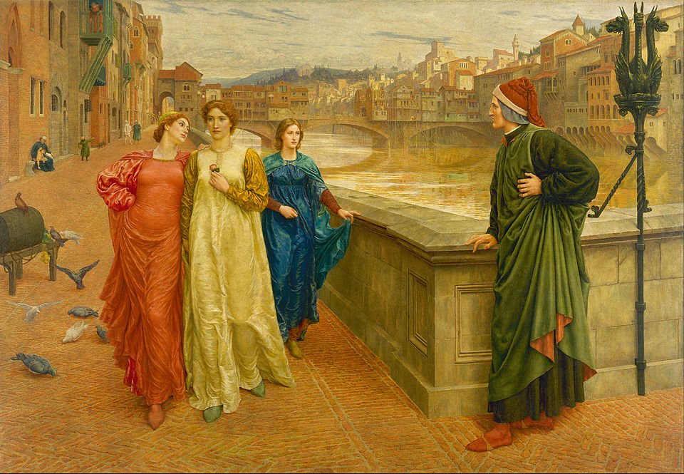

| HIS LIFE | |||
|
|||
| HIS WORKS | |||
|

|  |
| Dante and Beatrice, from La Vita Nuova, by Henry Holiday (1883) |
La Vita Nuova La Vita Nuova was Dante Alighieri's first work, written in his early years between 1292 and 1293 and featuring 35 poems and 42 chapters in prose. It relates part of Dante's memories, marking a turning point in European literature by giving a personal story told in common language without involving a protagonist or a fictitious narrator. The title does not mean "young life", but life renewed, enlightened by love. La Vita Nuova therefore tells of a young Dante enthralled by his keen love for Beatrice (Bice di Folco Portinari, the wife of Simone De Bardi) and the key revelation that this love brings the young Dante. He has not yet turned nine when he becomes smitten with the one whom he will love for eternity and who, at the time, is still only an eight-year-old girl. It should be pointed out immediately that Dante only met Beatrice twice - the first time when he was nine, and the second time some nine years later with once more the young lady's persistent silence and the insurmountable hurdles separating the two partners. There was no relationship or words spoken between the two of them. Their only exchange is Beatrice's "ever so sweet greeting" to Dante when they were 18, which made him "experience the height of bliss". After their encounter, Dante had a strange dream, described in a prematurely surrealistic sonnet, and his passion for the young lady grew so much that it moved some of his friends and began to arouse their curiosity. In an anxious attempt to conceal his love from his friends and family, Dante pretends that he is successively in love with two other women (fictitious women) until Beatrice, also taken in by Dante's sham, refuses to acknowledge his greeting. Tormented by no longer receiving Beatrice's greeting, he decides to write in praise of the young lady and inaugurates this "sweet new style" by the first song in La Vita Nuova, which he proclaims as the starting point for lyric poetry and which will mark his entire generation. He gives up trying to conquer Beatrice and learns to consider the passion that he feels towards her as an end in itself. His poetry will be dedicated exclusively to singing his beloved's praises. Long before Stendhal, Dante places the "crystallisation process" at the heart of genuine love. The unfulfilled feeling of love comes across as a revelation which, by leading to the surpassing of oneself and selflessness, becomes a source of bliss. The love devotion is seen as achieved happiness and is the effect of passion made happy and justified by shrugging off all that is not dependent. There is no longer any need for requited love or courteous approval. Seven years later, Beatrice died at the age of 25 without ever having spoken to him and without ever had Dante confide in her. Beatrice's early death leaves Dante grief-stricken and despondent, and two years later, prompts him to write La Vita Nuova. Had Beatrice lived, would she have inspired Dante to write La Vita Nuova and would she have subsequently served as a guide and source of enlightenment for writing the Divine Comedy? It is her absent quality that undoubtedly fascinated Dante, who admitted to only seeing Beatrice on rare occasions and from afar, always surrounded by other women, and one day, when he unexpectedly met her, his only way out was to faint. Dante therefore translated the miracle worked by Beatrice into verse. Beatrice took on the appearance of an angel sent down from heaven to earth to save those fortunate enough to know her, and she becomes a sort of mediator between the terrestrial experience and heaven. The story is about the imperfect, threatened adventure of two human beings looking to understand and find one another, where their separation becomes the condition of their love. This theme inspired several Italian authors following Dante, such as Manzoni in his Promessi sposi, to name but one. La Vita Nuova therefore stands as the first modern autobiographical work, which nevertheless disregards the factual and the picturesque to recount only the exemplary story of a love for Beatrice seen through its effects on Dante's conscience. |